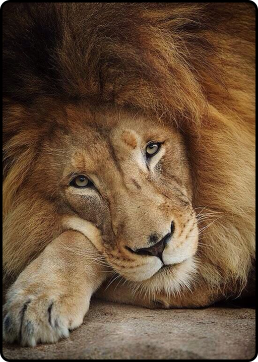

O ZooWiki é uma plataforma online dedicada à pesquisa, catalogação
e divulgação de informações científicas sobre o mundo animal. Dese
nvolvido com o objetivo de facilitar o acesso a dados confiáveis, o site
se posiciona como uma fonte essencial para estudantes, pesquisado
res, educadores e amantes da natureza que buscam conhecimento a
profundado sobre a fauna mundial.
Com um acervo extenso e em constante expansão, o ZooWiki reúne informações
sobre milhares de espécies, abrangendo desde animais comuns até espécies raras
e ameaçadas de
extinção. Cada entrada no site inclui
dados detalhados sobre taxo
nomia,
habitat, comportamento, alimentação, reprodução, status de conservação
e curiosidades científicas, sempre com base em fontes confiáveis e
atualizadas.
Além da descrição biológica, o ZooWiki oferece recursos visuais, como
imagens,
mapas de distribuição e vídeos educativos, tornando a experiência do usuário
mais completa e didática. A interface é organizada e de fácil navegação,
permitindo buscas por nome científico, nome comum, grupo taxonômico ou
localização geográfica.

O compromisso do ZooWiki com a ciência e a educação é reforçado por
sua política de revisão colaborativa. Especialistas em zoologia e biologia
contribuem regularmente para a atualização do conteúdo, garantindo a
precisão e a relevância das informações publicadas.
Ao unir rigor científico com acessibilidade digital, o ZooWiki promove a co
nscientização sobre a biodiversidade e a importância da preservação dos
ecossistemas. É mais do que um repositório de dados — é uma ferramen
ta de educação ambiental e um ponto de encontro entre a ciência e o públ
ico em geral.